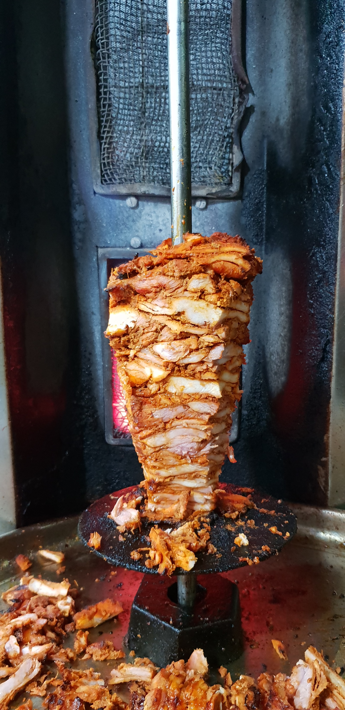

Chicken Shawarma
Shawarma is vastly popular across the middle-east, specially Lebanon.
Now, a popular street food as well, chicken shawarma has quickly garnered appreciation across the globe, particularly in India.
You can prepare this easy shawarma at home as a side dish for brunch or for evening snacks.
Ingredients:
For the marinade:
- Boneless chicken thighs (skinless)
- 1/2 cup Malt Vinegar
- 1/4 cup Plain yogurt
- 1 tbsp Vegetable oil
- to taste Salt and pepper
- 1/4 tsp Freshly ground cardamom
- 1 tsp All spice powder
For the sauce:
- 1/2 cup Tahini
- 1/4 cup Plain yogurt
- 1/2 tsp Garlic (minced)
- 2 tbsp Lemon juice
- 1 tbsp Olive oil
- 1 tbsp Fresh parsley, chopped
- to taste Salt and pepper
For plating:
- 4 medium Tomatoes, sliced
- 1/2 cup Onion, sliced
- 4 cups Lettuce, shredded
- 8 Pita bread rounds
Steps:
- In a glass baking dish, mix together the malt vinegar, 1/4 cup yogurt, vegetable oil, mixed spice, cardamom, salt and pepper.
- Place the chicken thighs into the mixture and turn to coat. Cover and marinate in the refrigerator for at least 4 hours or overnight.
- Preheat the oven to 350 degrees F (175 degrees C).
- In a small bowl, mix together the tahini, 1/4 cup yogurt, garlic, lemon juice, olive oil, and parsley.
- Season with salt and pepper, taste, and adjust flavors if desired. Cover and refrigerate.
- Cover the chicken and bake in the marinade for 30 minutes, turning once.
- Uncover, and cook for an additional 5 to 10 minutes, or until chicken is browned and cooked through.
- Remove from the dish, and cut into slices.
- Place sliced chicken, tomato, onion, and lettuce onto pita breads.
- Roll up, and top with tahini sauce.